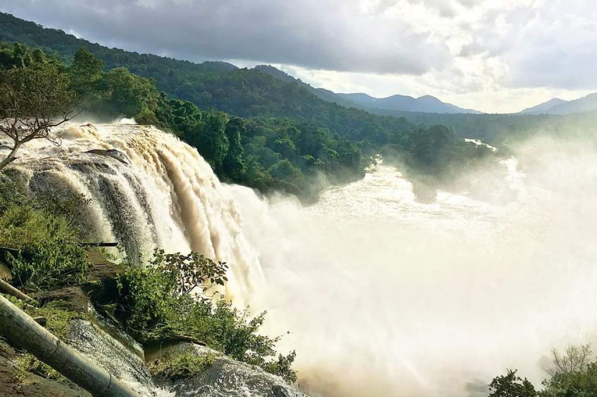

Major Attractions



Thrissur is a city in the south Indian state of Kerala. It's known for sacred sites and colorful festivals. In the center is Vadakkumnathan Temple, dedicated to Lord Shiva and adorned with murals. The ornate, Indo-Gothic Our Lady of Dolours Basilica is nearby.
Thrissur is known as the cultural capital of Kerala, and the land of Poorams. The district is known for its ancient temples, churches, and mosques. Thrissur Pooram is the most colourful temple festival in Kerala. Thrissur is famous for fostering classical Keralan performing arts, religious sites and the renowned Thrissur Pooram festival, Onam festival and Vadakkumnathan Temple.
Thrissur is the short form of Thiru-Shiva-Per-Ur which literally means “a city with three temples of Lord Shiva”. Thrissur later became anglicised to Trichur. Thrissur is from where Kerala gets a fair share of its festive glitter. Thrissur was the capital of the Kingdom of Kochi. The festivals celebrated here are the major attraction for tourists and a visit to Thrissur is incomplete without witnessing these. Other tourist spots in Thrissur include the Vadakkumnathan Kshetram Temple, Tomb of Shakthan Thampuran, Archaeology Museum, Athirapally Falls, Heritage Garden and many more.